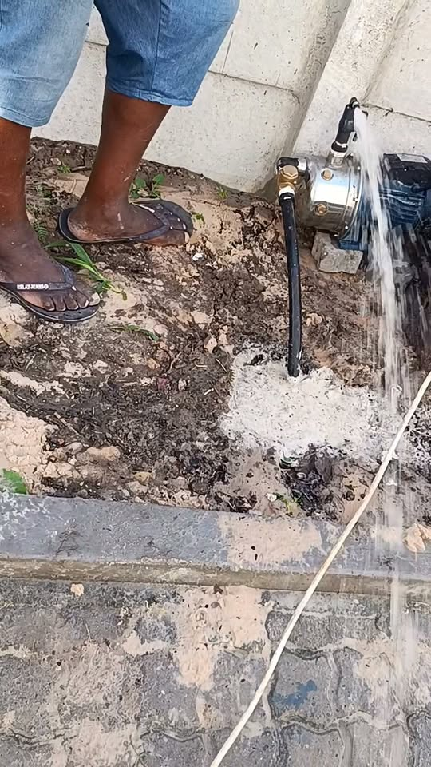
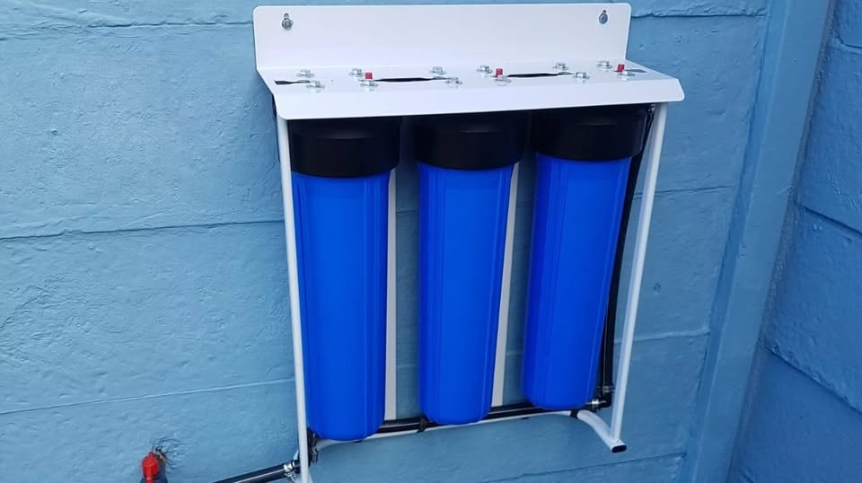

Services
Borehole and wellpoint services in Cape Town
From drilling to filtered water at the tap. One team, one number to call.

Borehole Drilling
Boreholes drilled with a compact rig that fits small yards and narrow side passages. Most Cape Town homes have room.
See details →
Wellpoint Installation
Shallow wellpoints for garden and irrigation water, ideal on Cape Town's sandy ground.
See details →
Borehole Water Filtration
3-stage Big Blue filters and filter vessels, mounted neatly on your wall.
See details →
Pumps, Tanks & Repairs
Pumps and tanks connected to your borehole or wellpoint, plus repairs when the water stops.
See details →Borehole or wellpoint?
Not sure which one your property needs? Our quick guide explains the difference, the cost and the water you'll get.
Read the guide →